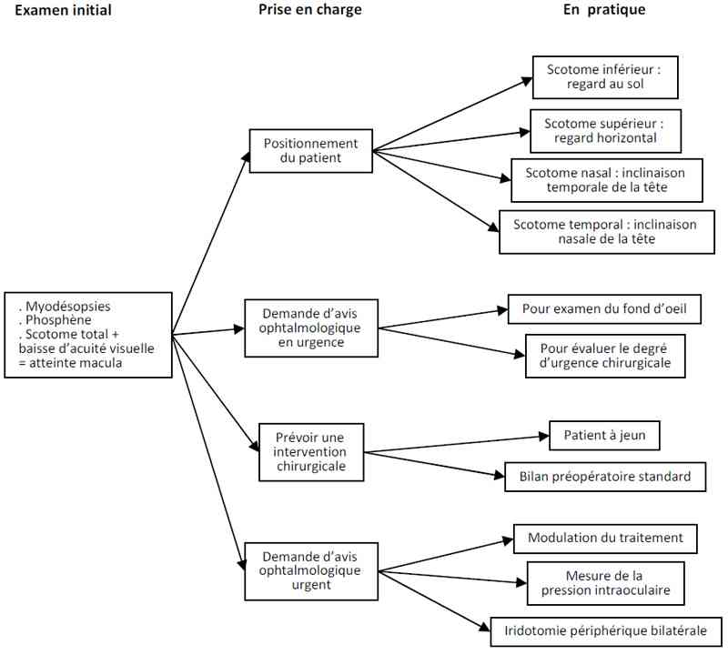

Décollement de rétine
AdulteSpécialité : ophtalmologie /
Points importants
-
Savoir reconnaître les signes évocateurs :
- phosphène (signe d'une déchirure rétinienne) : perception lumineuse anormale localisée dans le champ visuel périphérique, persistant paupières fermées, durant plus de quelques minutes
- scotome positif (signe d'un soulèvement rétinien): Impression de voile noir dans une partie du champ visuel
- baisse d'acuité visuelle (signe un soulèvement de la région maculaire) : non obligatoire si la rétine maculaire n'est pas décollée
- Indolore, brutal, unilatéral (au moins initialement)
- Etiologies les plus fréquentes : Forte myopie, opération de la cataracte, traumatisme
- L'implication de la macula dans le décollement conditionne le pronostic visuel final
- Le traitement est chirurgical : dans les heures suivant le diagnostic si acuité préservée (macula à plat), dans les jours suivants autrement
- « Positionner » le patient si la macula n'est pas décollée : orienter la tête regard vers le sol si le scotome est perçu inférieur, regard horizontal pour un scotome supérieur
Présentation clinique / CIMU
SIGNES FONCTIONNELS
Association évocatrice de survenue brutale
-
Phosphène (signe d'une déchirure rétinienne) : perception lumineuse anormale localisée dans le champ visuel périphérique, persistant paupières fermées, durant plus de quelques minutes :
- persistant, périphérique
- parfois précédé de myodésopsies (impression de « mouches volantes »)
-
Scotome positif (signe d'un soulèvement rétinien): impression de voile noir dans une partie du champ visuel
- Son étendue traduit l'aire du soulèvement rétinien
- Baisse d'acuité visuelle (signe un soulèvement de la région maculaire) : non obligatoire si la rétine maculaire n'est pas décollée
En règle unilatéral, peut se produire sur l'oeil controlatéral secondairement
CONTEXTE
Terrain
- Diabète mal équilibré
ATCD
- Forte myopie
- Opération de la cataracte (même ancienne) de l'oeil atteint
Circonstances de survenue
- Traumatisme oculaire direct
EXAMEN CLINIQUE
- Exploration du champ visuel au doigt : recherche une amputation
-
Evaluation du reflet pupillaire :
- l'illumination de la pupille renvoie un reflet normal rouge-orangé
- lorsque la rétine est décollée, le reflet peut être vu grisâtre (comparer les 2 yeux)
CIMU
- Tri 2
Signes paracliniques
- Bilan préopératoire standard
- Les examens complémentaires éventuels sont demandés par l'ophtalmologiste s'il y a lieu
Diagnostic étiologique
- Recherche d'un traumatisme céphalique associé nécessitant une prise en charge spécifique
Diagnostic différentiel
- Autre cause de baisse d'acuité visuelle non douloureuse
Traitement
TRAITEMENT PREHOSPITALIER / INTRAHOSPITALIER
- Demande d'avis ophtalmologique en urgence
-
Si l'acuité visuelle est préservée, « positionner » le patient jusqu'au traitement chirurgical pour limiter la progression du décollement de rétine vers l'aire maculaire :
- le décollement est supérieur, le scotome est inférieur, le regard doit être orienté vers le sol
- le décollement est inférieur, le scotome est supérieur, le regard doit être vers l'horizon
- le décollement est nasal, le scotome est temporal, la tête doit être inclinée du coté nasal
- le décollement est temporal, le scotome est nasal, la tête doit être inclinée du coté temporal
- le traitement est chirurgical en ophtalmologie
Surveillance
- Patient laissé à jeun jusqu'aux consignes de l'ophtalmologiste chirurgien
- Contrôle du strict bon positionnement du patient
- Laisser le patient au calme
- Eviter toute secousse céphalique
Devenir / orientation
CRITERES D'ADMISSION
- Avis ophtalmologique chirurgical en urgence
- Service d'hospitalisation ophtalmologique si l'acuité visuelle est conservée
- Rendez-vous chirurgical si l'acuité visuelle est impactée
Mécanisme / description
- La rétine « tapisse » la paroi interne de l'oeil en restant attachée par effet ventouse hormis sur son pourtour antérieur (derrière l'iris, à l'ora serrata)
- Le vitré, qui remplit la cavité postérieure de l'oeil, est attaché par endroit à la rétine
- Lorsque le vitré tire brutalement sur la rétine ou lorsque la rétine est de mauvaise qualité à sa périphérie, une déchirure rétinienne peut se produire, occasionnant un phosphène, parfois précédé de myodésopsies correspondant à une hémorragie locale ayant diffusée dans le vitré
- Le liquide oculaire que contient le vitré peut alors s'insinuer entre la rétine et la paroi oculaire, décollant la rétine de la paroi : c'est le décollement de rétine qui occasionne un scotome complet (zone totalement noire) positif (peut être perçu par le patient)
- Le pronostic visuel final dépend surtout de l'aire maculaire décollée et/ou du délai de réapplication de la rétine à la paroi
Algorithme
- Algorithme : décollement de rétine
 _39 Algorithme Algorithme : décollement de rétine
Bibliographie
- Chauvaud D, Azan F. Chirurgie du décollement de rétine. Ed Masson
Auteur(s) : Jean-Louis BOURGES